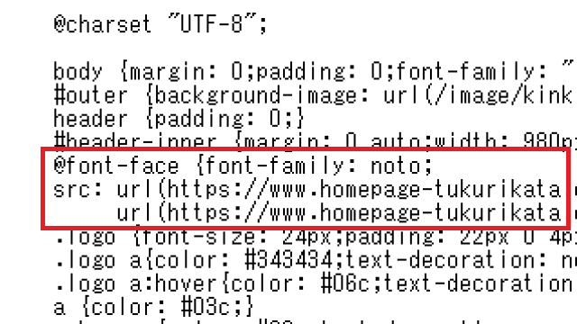
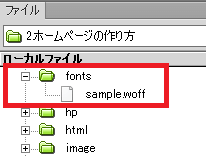
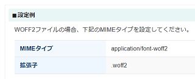

@font-faceでWEBフォントの指定方法
CSSに「@font-face」を指定することで、ホームページ上でWEBフォントを使うことができます。「.woff」や「.woff2」などのフォントファイルをサーバーにアップロードしたのち、CSS側で「@font-face」を記載しておくとよいでしょう。

例えば、Google無料フォントの「Noto Fonts」などをダウンロードし、圧縮されたWOFF形式のファイルに変換したのち、自サイトに「fonts」などのフォルダを作成してアップロードします。

次に、CSS側で「@font-face」を記載して、アップロードしたWEBフォントのfont-familyを指定します。書き方は「@font-face」の後にフォントファイルのある場所とそのfont-familyを設定するだけです。
@font-face {
font-family: "sample";
src: url(https://www.homepage-tukurikata.com/fonts/sample.woff);
}
後は、実際にフォントを使いたい箇所でこの「font-family」を指定するとよいでしょう。
例えば、このように記述したとします。
<p style="font-family: 'sample';">ホームページの作り方</p>
すると、このような「Noto」のWEBフォントで表示されます。
ホームページの作り方
もしくは、CSSに記載する際はこのようになるかと思います。
.example {font-family: "sample";}
「font-family」で指定する前の段階でWEBフォントを読み込む必要がありますので、「@font-face」をCSSの最初の方で指定しておくとよいでしょう。
この「CSS3」や「CSS2」の違いについてですが、htmlのようなバージョンの違いではなく、レベルの違いのため、「CSS3」を使用する際に何か特殊な指定や宣言をする必要はありません。
この「@font-face」については古いブラウザでも対応しているため、今あるCSSにそのまま指定するだけで特に問題なく表示されるはずです。
CSSでの「@font-face」の記載方法
CSSでの実際の指定方法については、W3Cの「4.1 The @font-face rule」の箇所に例文が書いてありますので、そちらをご参照ください。
@font-faceのあとにフォント名を登録させ、そのあとにフォントファイルのある場所を指定するとよいでしょう。
@font-face {
font-family: Gentium;
src: url(http://example.com/fonts/Gentium.woff);
}
また、「font-display: swap;」も指定しておくことをおすすめします。フォントのダウンロードに時間がかかるとき、ブラウザはFOIT（flash of invisible text）で見えない文字を表示することでテキストを非表示にします。そのため、「font-display: swap;」を記載し、とりあえずでもシステムフォントですぐに表示するとユーザビリティーの向上につながります。
@font-face {
font-family: Gentium;
src: url(http://example.com/fonts/Gentium.woff);
font-display: swap;
}
あるいは、フォントを「<link rel="preload"」で事前にダウンロードする方法もありますが、事前にダウンロードしたものの、結局は使わなかったというケースもあるため、できるだけ「preload」の使用は避けた方がよいと思います。
次に、実際に使いたい場所でそのフォント名を指定し、表示されなかった場合のためにメイリオなどの代替フォントを指定しておくとよいかもしれません。
p {font-family: Gentium, Meiryo, sans-serif;}
上の例文を参考にして、使いたいフォント名に置き換えれて使用すればよいでしょう。
@font-face {
font-family: 使いたいフォント名;
src: url(フォントファイルのある場所);
}
p {font-family: 使いたいフォント名;}
ちなみに、この「@font-face」の場所については、CSSの先頭部分で「@charset "UTF-8";」などの文字コードを指定した直後に書かれていることが多いです。できるだけフォントを先に読み込む形にしておいた方がよいかと思います。
■複数を指定する場合
上記ページの「4.3. Font reference: the src descriptor」の箇所に例がありますが、WOFF2なども指定する場合は「src: A,B,C;」の形で以下のように記述すればよいでしょう。
@font-face {
font-family: bodytext;
src: url(ideal-sans-serif.woff2) format("woff2"),
url(good-sans-serif.woff) format("woff"),
url(basic-sans-serif.ttf) format("opentype");
}
コメント内に「load WOFF2 font if possible, otherwise WOFF, else use OpenType font」とありますので、この場合は「WOFF2が可能ならそれを読み込み、そうでなければWOFF、そのほかの場合はOpenType font」を読み込む形になります。
一般的なCSSのような後方の上書きルールではなく、前方から合致したものが一個だけ読み込まれるため、適用したいものを前に記述するようにしましょう。
■ローカルフォントが利用可能か参照する場合
上記の箇所のすぐ下にローカルフォントに関する記述がありますが、PC内にフォントがインストールされている場合、そちらを使うように指定した方がよいでしょう。
@font-face {
font-family: MyGentium;
src: local(Gentium),
url(Gentium.woff);
}
src: local(Gentium)の箇所になりますが、まずはlocal(フォント名)でパソコン内のフォントを利用可能かを一応は参照し、もし利用できなければ、url(Gentium.woff)にてWEBフォントをダウンロードする設定にしておくと効率的です。
例えば、メイリオならlocal("メイリオ")などといった形になりますが、日本語の場合は引用符で囲むことをおすすめします。また、ブラウザやOSによって表記が違うため、local(Meiryo)などの英語表記も指定しておくとよいかと思います。
ただし、フォントによっては著作権があるはずなので、サーバーにWEBフォントとしてアップロードして使用する際にはライセンスの購入が必要になるかもしれません。
「ユーザーのPC内にあるローカルフォント」を利用するようCSSで指定するのは問題ありませんが、WEBフォントとしてサーバーにアップロードして利用する際には著作権の問題があるため、よく確認してから利用するようにしましょう。
WEBフォントが表示されない場合の対処方法
もしWEBフォントが正常に表示されない場合、サーバー側でフォントの拡張子の関連付けがうまくいってないのかもしれません。その場合、.htaccessでMIMEタイプを設定すると表示されるかもしれません。
例えば、当ホームページが使用しているレンタルサーバー会社では以下のようなMIME設定例がありましたが、以下のような記載になります。

■当サイトの例
AddType application/font-woff2 .woff2
AddType application/font-woff .woff
ApacheのAddTypeディレクティブの箇所が参考になるかと思いますが、お使いのレンタルサーバー会社へ問い合わせてみるとよいでしょう。
AMPページなどでは、画像のほかフォントも配信サーバーにキャッシュされる必要があるため、WEBフォントが利用できない状態では正常に表示されない可能性があります。
また、CSS側で引用符""の書き忘れやweight指定などもチェックしてみることをおすすめします。もともと太めのWEBフォントを使用していたとしても、見出しのhタグなどはデフォルトの状態でboldのため、ブラウザ側で気をきかせてさらに太めに表示してしまうことがあります。
そのような場合は「font-synthesis: none;」を指定しておくとよいでしょう。
加えて、wwwなしでは表示されるのに、wwwありでは表示されない場合など、「Access-Control-Allow-Origin」でブロックされている可能性もあります。その場合、CSSやウェブフォントのURLを相対URLで指定するとうまくいくかもしれません。
もしWEBフォントの表示がにじむ場合、サブセット化の過程で付属情報などが削除されたのかもしれません。その場合、Pythonをパソコンにインストールして、fonttoolsのsubsetでサブセット化するときれいに表示されるはずです。→ 詳細
もしくは、Webフォントサービスを利用すると簡単にきれいに表示されるかと思います。
次のページ → Webフォントサービスを比較